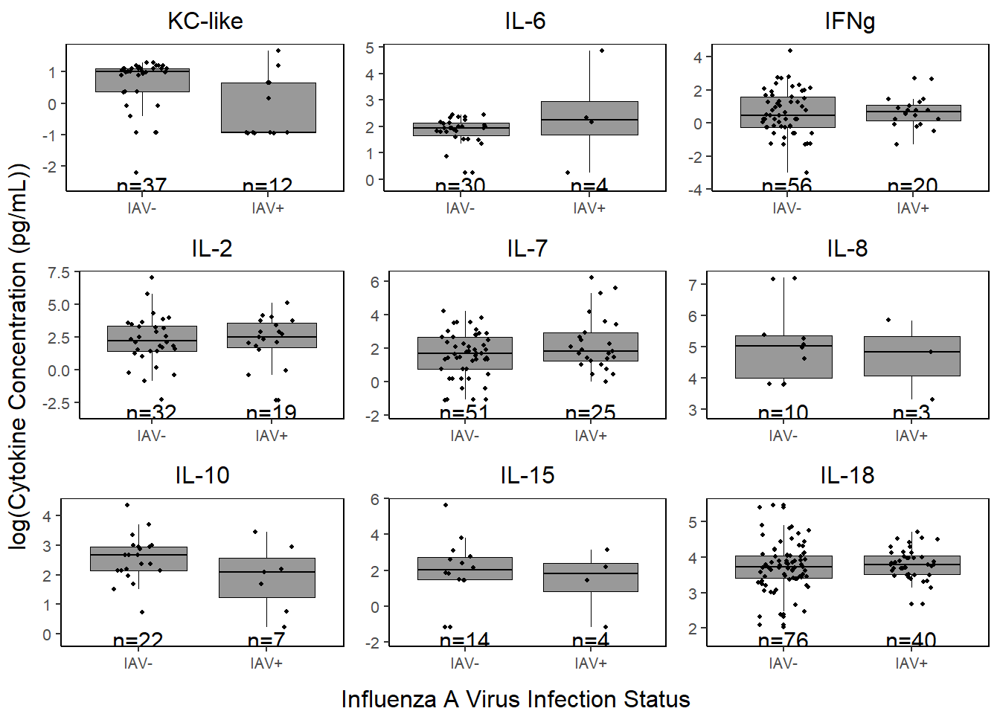
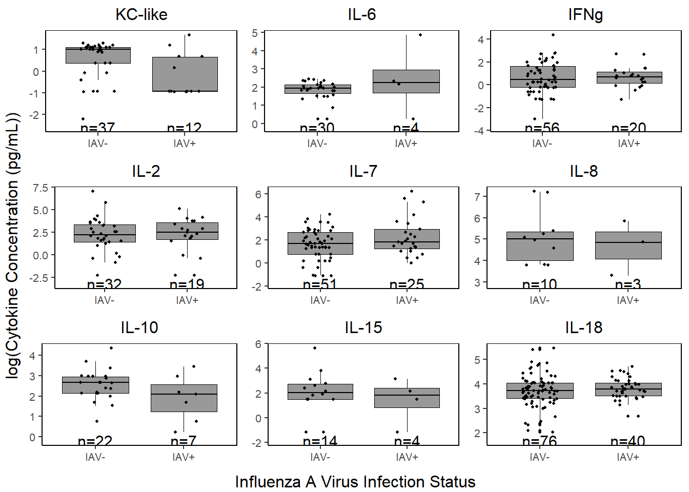
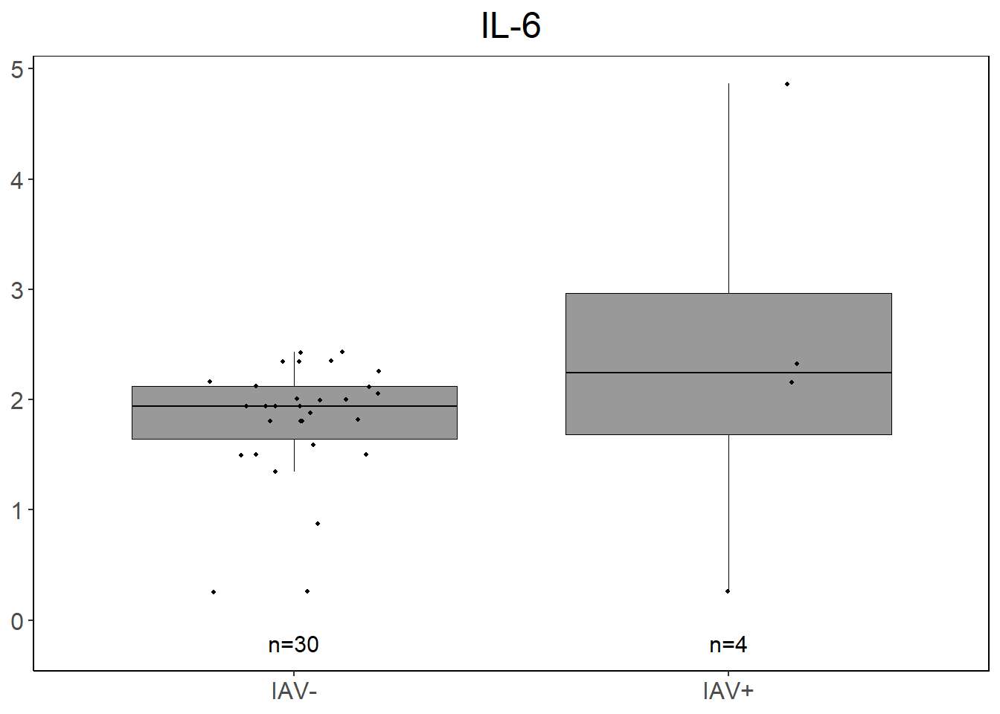
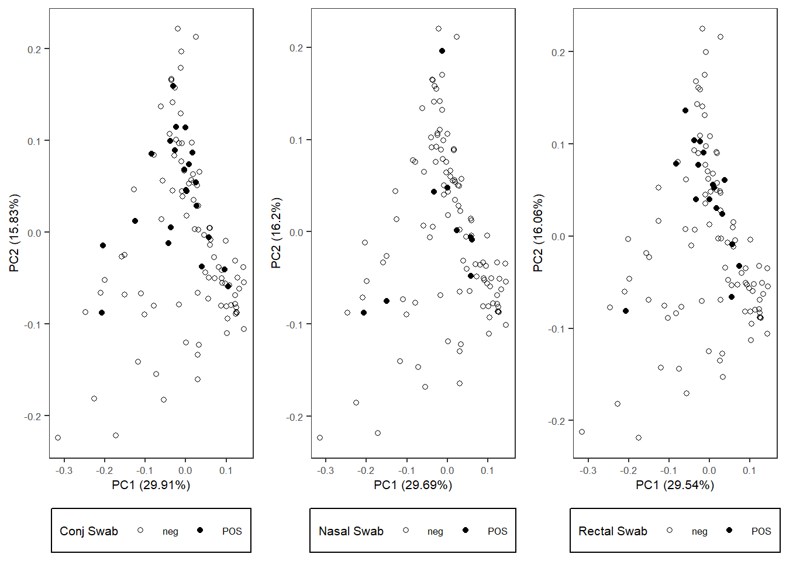
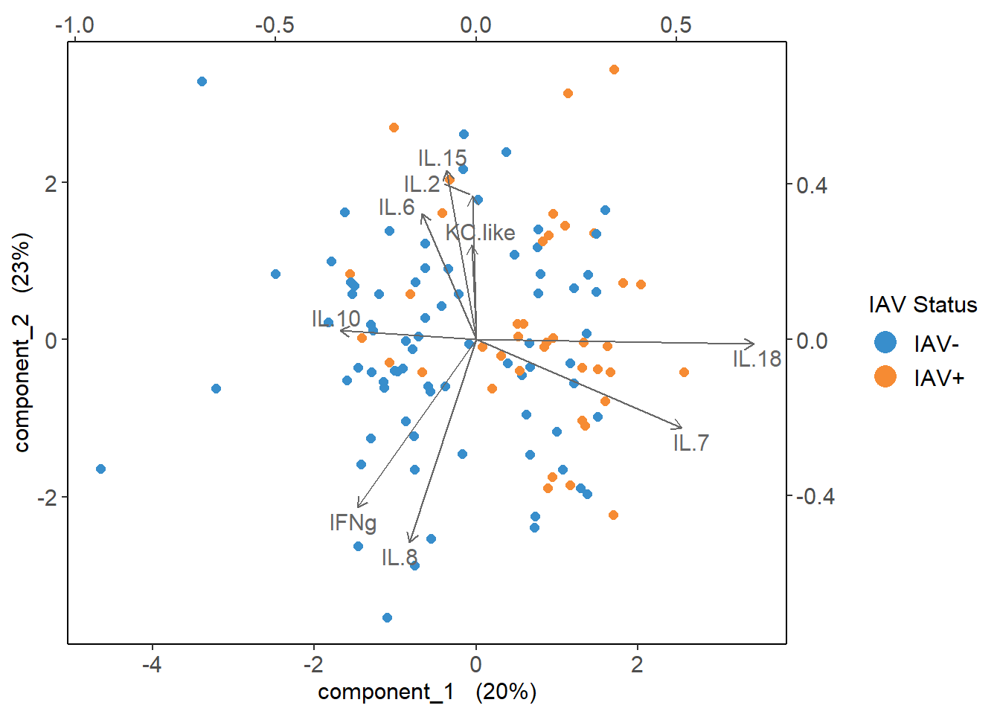
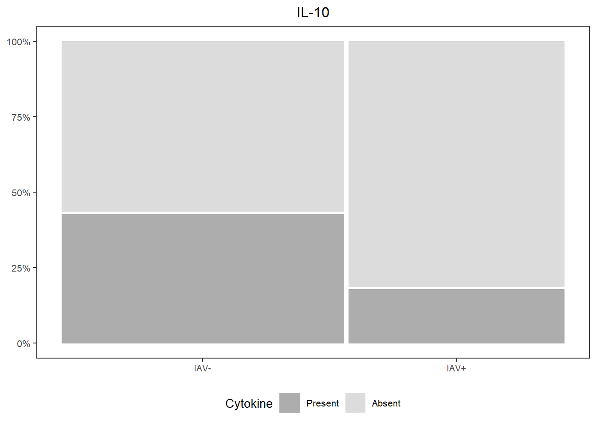
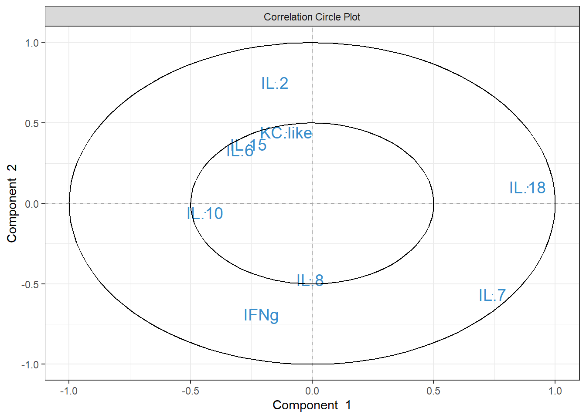
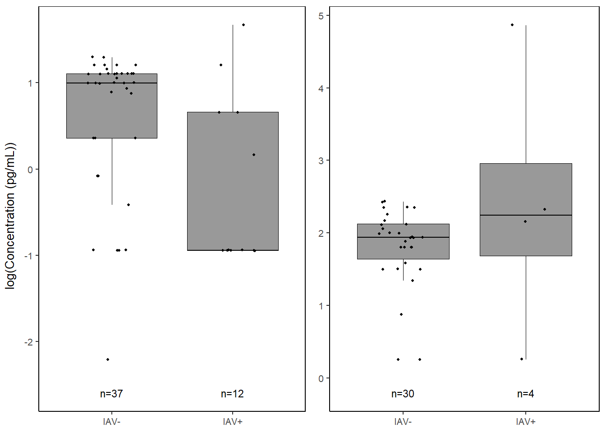
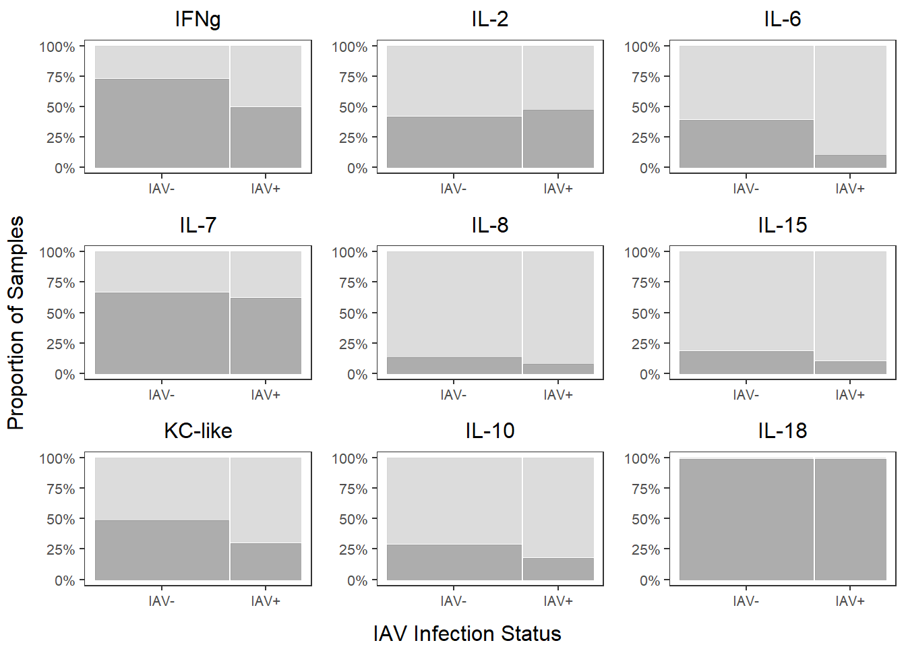

6 IAV ~ cytokines
6.2 Data
cyto <-
read.csv("Output Files/cleaned_cytokine.csv")
cytobin <-
read.csv("Output Files/cleaned_cytokine_bin.csv")
meta <- read.csv("Output Files/metadata_cyto.csv") %>%
mutate(iav=gsub("neg", "IAV-", iav),
iav=gsub("pos", "IAV+", iav))
# Merge cytokine & metadata
data <- merge(cyto, meta, by="Sample") %>%
filter(!is.na(iav)) %>%
mutate(analysis.year=factor(analysis.year))
databin <-
merge(cytobin, meta, by="Sample") %>%
filter(!is.na(iav)) %>%
mutate(analysis.year=factor(analysis.year))6.3 PERMANOVA
6.3.1 Cytokine Presence/Absence
6.3.1.1 Create similarity matrix (Sorensen)
Dissimilarity = 1-Sorensen

# Dissimilarity summary stats
mean(1-databin_dist); min(1-databin_dist); max(1-databin_dist); median(1-databin_dist)## [1] 0.4016769## [1] 0## [1] 0.8## [1] 0.46.3.1.2 Run PERMANOVA
Use restricted permutation test - data are not exchangeable between analysis years so permute within groups defined by strata.
** Not sig
# define permutations & strata
permute_databin <-
how(plots=Plots(strata=databin$analysis.year, type="none"), nperm=4999)
# run permanova
adonis2((1-databin_dist) ~ iav,
data=databin,
permutations=permute_databin)## Permutation test for adonis under reduced model
## Plots: databin$analysis.year, plot permutation: none
## Permutation: free
## Number of permutations: 4999
##
## adonis2(formula = (1 - databin_dist) ~ iav, data = databin, permutations = permute_databin)
## Df SumOfSqs R2 F Pr(>F)
## Model 1 0.3814 0.03362 3.9657 0.1808
## Residual 114 10.9638 0.96638
## Total 115 11.3452 1.000006.3.1.3 Homogeneity of group dispersions
** Not sig
## Analysis of Variance Table
##
## Response: Distances
## Df Sum Sq Mean Sq F value Pr(>F)
## Groups 1 0.00374 0.0037435 0.4087 0.5239
## Residuals 114 1.04431 0.0091606
6.3.1.4 Visualization
Principal Coordinates Analysis
# Use 1 - Sorensen's for dissimilarity
databin_pco <- cmdscale(1-databin_dist, eig=TRUE)
plot(databin_pco$points, type="n",
cex.lab=1.5, cex.axis=1.1, cex.sub=1.1)
ordiellipse(ord = databin_pco,
groups = factor(data$iav),
display = "sites",
col = c("grey", "darkseagreen"),
lwd = 2,
label = TRUE)
plot(databin_pco$points, type="n",
cex.lab=1.5, cex.axis=1.1, cex.sub=1.1)
ordispider(ord = databin_pco,
groups = factor(data$iav),
display = "sites",
col = c("grey", "darkseagreen"),
lwd=2,
label=TRUE)
6.3.2 Cytokine Concentration
6.3.2.2 Run PERMANOVA
** Not sig
# define permutations & strata
permute_data <-
how(plots=Plots(strata=data$analysis.year, type="none"),
nperm=4999)
# run permanova
adonis2(data_dist ~ iav,
data=data,
permutations=permute_data)## Permutation test for adonis under reduced model
## Plots: data$analysis.year, plot permutation: none
## Permutation: free
## Number of permutations: 4999
##
## adonis2(formula = data_dist ~ iav, data = data, permutations = permute_data)
## Df SumOfSqs R2 F Pr(>F)
## Model 1 0.2609 0.01366 1.5784 0.4788
## Residual 114 18.8403 0.98634
## Total 115 19.1011 1.000006.3.2.3 Homogeneity of group dispersions
** Not sig
## Analysis of Variance Table
##
## Response: Distances
## Df Sum Sq Mean Sq F value Pr(>F)
## Groups 1 0.09537 0.095372 3.6232 0.0595 .
## Residuals 114 3.00074 0.026322
## ---
## Signif. codes: 0 '***' 0.001 '**' 0.01 '*' 0.05 '.' 0.1 ' ' 1
6.3.2.4 Visualization
# Use Bray-Curtis dissimilarity matrix
data_pco <- cmdscale(data_dist, eig=TRUE)
plot(data_pco$points, type="n",
cex.lab=1.5, cex.axis=1.1, cex.sub=1.1)
ordiellipse(ord = data_pco,
groups = factor(data$iav),
display = "sites",
col = c("grey", "darkseagreen"),
lwd = 2,
label = TRUE)
plot(data_pco$points, type="n",
cex.lab=1.5, cex.axis=1.1, cex.sub=1.1)
ordispider(ord = data_pco,
groups = factor(data$iav),
display = "sites",
col = c("grey", "darkseagreen"),
lwd=2,
label=TRUE)
6.4 PLS-DA
6.4.3 Detect batch effect
Reference: https://evayiwenwang.github.io/PLSDAbatch_workflow/
pca_before <-
mixOmics::pca(pls_x_clr, scale=TRUE)
plotIndiv(pca_before,
group=data$analysis.year,
pch=20,
legend = TRUE, legend.title = "Analysis Year",
title = "Before Batch Correction",
ellipse = TRUE, ellipse.level=0.95)
Scatter_Density(object = pca_before,
batch = pls_y$analysis.year,
trt = pls_y$bc_bin,
trt.legend.title = "Body Condition",
color.set = c("#9d9d9d","#008ba2","black"))
6.4.3.1 Estimate # variable components
Use PLSDA from mixOmics with only treatment to choose number of treatment components to preserve.
Number = that explains 100% of variance in outcome matrix Y.
## $X
## comp1 comp2 comp3 comp4 comp5 comp6 comp7
## 0.17471622 0.25676902 0.11055489 0.09763907 0.07510012 0.06899208 0.12441304
## comp8 comp9
## 0.09181557 0.08605453
##
## $Y
## comp1 comp2 comp3 comp4 comp5 comp6 comp7 comp8
## 1.0000000 0.8351838 0.8094240 0.8042025 0.8033727 0.8029372 0.8029271 0.8029271
## comp9
## 0.8029271## [1] 16.4.3.2 Estimate # batch components
Use PLSDA_batch with both treatment and batch to estimate optimal number of batch components to remove.
For ncomp.trt, use # components found above. Samples are not balanced across batches x treatment, using balance = FALSE.
Choose # that explains 100% variance in outcome matrix Y.
batch_comp <-
PLSDA_batch(X = pls_x_clr,
Y = pls_y$iav,
Y.bat = pls_y$analysis.year,
balance = FALSE,
ncomp.trt = 1, ncomp.bat = 9)
batch_comp$explained_variance.bat## $X
## comp1 comp2 comp3 comp4 comp5 comp6 comp7
## 0.50875836 0.11640179 0.07128088 0.14655103 0.05411045 0.07033902 0.03255846
## comp8 comp9
## 0.11079636 0.01760352
##
## $Y
## comp1 comp2 comp3 comp4 comp5 comp6 comp7
## 0.39147326 0.55682867 0.05169808 0.39135410 0.55354977 0.05376613 0.54820462
## comp8 comp9
## 0.39556449 0.05306025## [1] 16.4.3.3 Correct for batch effects
Use optimal number of components determined above.
Treatment = 1, Batch = 3
plsda_batch <-
PLSDA_batch(X = pls_x_clr,
Y = pls_y$iav,
Y.bat = pls_y$analysis.year,
balance = FALSE,
ncomp.trt = 1, ncomp.bat = 3)
data_batch_matrix <-
plsda_batch$X.nobatch
data_batch_df <-
data_batch_matrix %>%
data.frame() %>%
mutate(iav = pls_y$iav)
write.csv(data_batch_df, "Output Files/batchcorrected_iav.csv")6.4.4 PLSDA on Batch-Corrected Data
plsda_model <-
plsda(data_batch_matrix,
pls_y$iav,
scale=TRUE)
plotIndiv(plsda_model,
group=pls_y$iav,
pch=20,
legend = TRUE, legend.title = "IAV Status",
ellipse = TRUE, ellipse.level = 0.95)

6.4.6 Cytokine Contributions
plsda_loadings <-
plsda_model$loadings$X %>%
data.frame() %>%
select(1:2) %>%
arrange(comp1)
plsda_loadings## comp1 comp2
## IL.10 -0.339760020 0.02332628
## IFNg -0.295663429 -0.43075479
## IL.8 -0.165618911 -0.52182239
## IL.6 -0.135013840 0.32427925
## IL.15 -0.073708934 0.43507606
## KC.like -0.009718823 0.24376693
## IL.2 -0.007987815 0.36859902
## IL.7 0.513862191 -0.22747648
## IL.18 0.694148605 -0.01123763

6.5 CART
Cytokine Importance ### Prepare data
6.5.1 Cross Validation
# Creating task and learner
task <- as_task_classif(iav ~ .,
data = data_cart)
task <- task$set_col_roles(cols="iav",
add_to="stratum")
learner <- lrn("classif.rpart",
predict_type = "prob",
maxdepth = to_tune(2, 5),
minbucket = to_tune(1, 40),
minsplit = to_tune(1, 30)
)
# Define tuning instance - info ~ tuning process
instance <- ti(task = task,
learner = learner,
resampling = rsmp("cv", folds = 10),
measures = msr("classif.ce"),
terminator = trm("none")
)
# Define how to tune the model
tuner <- tnr("grid_search",
batch_size = 10
)
# Trigger the tuning process
#tuner$optimize(instance)
# optimal values:
# maxdepth = 5
# minbucket = 9
# minsplit = 20
# classif.ce = 0.29090916.5.2 Run model with optimized parameters
cart_model <- rpart(formula=iav ~ .,
data=data_cart,
method="class",
maxdepth=5,
minbucket=9,
minsplit=20)
# plot optimized tree
rpart.plot(cart_model)
## KC.like IL.6 IL.18 IFNg IL.10 IL.8 IL.15
## 5.78208805 4.53238756 4.15895972 4.15827720 4.11122995 1.43893048 0.41112299
## IL.2
## 0.094938956.5.3 Plot
Variable importance: the sum of the goodness of split measures for each split for which it was the primary variable, plus goodness * (adjusted agreement) for all splits in which it was a surrogate. In the printout these are scaled to sum to 100 and the rounded values are shown, omitting any variable whose proportion is less than 1%. (https://cran.r-project.org/web/packages/rpart/vignettes/longintro.pdf)
6.5.3.1 Variable Importance
varimp <-
data.frame(imp=cart_model$variable.importance) %>%
rownames_to_column() %>%
rename("variable" = rowname) %>%
arrange(imp) %>%
mutate(variable=gsub("\\.","-",variable),
variable = forcats::fct_inorder(variable))
varimp_plot <-
ggplot(varimp) +
geom_segment(aes(x = variable,
y = 0,
xend = variable,
yend = imp),
linewidth = 0.5,
alpha = 0.7) +
geom_point(aes(x = variable,
y = imp),
size = 1,
show.legend = F,
col="black") +
labs(x="Cytokine",
y="Variable Importance") +
coord_flip() +
theme_classic() +
theme(text=element_text(size=10, color="black"))6.5.3.3 Proportions
##
## Present Absent
## IAV- 48.68421 51.31579
## IAV+ 30.00000 70.00000##
## Present Absent
## IAV- 39.47368 60.52632
## IAV+ 10.00000 90.00000kc_prop <-
databin %>%
ggplot(data=.) +
geom_mosaic(aes(x=product(KC.like,iav), fill=KC.like)) +
scale_fill_manual(values=c("Present"="gray60", "Absent"="lightgray"),
name="Cytokine") +
scale_y_continuous(labels = scales::percent) +
labs(title="KC-like") +
theme_bw() +
theme(panel.grid.major = element_blank(),
panel.grid.minor = element_blank(),
axis.title.x = element_blank(),
axis.title.y = element_blank(),
legend.position="bottom",
text = element_text(size=10),
plot.title = element_text(hjust = 0.5))
kc_prop
cyto_leg <- get_legend(kc_prop)
kc_prop <-
kc_prop +
theme(legend.position="none")
il6_prop <-
databin %>%
ggplot(data=.) +
geom_mosaic(aes(x=product(IL.6,iav), fill=IL.6)) +
scale_fill_manual(values=c("Present"="gray60", "Absent"="lightgray")) +
scale_y_continuous(labels = scales::percent) +
labs(title="IL-6") +
theme_bw() +
theme(panel.grid.major = element_blank(),
panel.grid.minor = element_blank(),
axis.title.x = element_blank(),
axis.title.y = element_blank(),
legend.position="none",
text = element_text(size=10),
plot.title = element_text(hjust = 0.5))
il6_prop
6.5.3.4 Concentrations
kclike <-
data %>%
select(iav, KC.like) %>%
filter(!KC.like==0) %>%
ggplot(., aes(x=iav, y=log(KC.like))) +
geom_boxplot(color="black", fill="gray60", lwd=0.25,
outliers=FALSE) +
geom_point(size=0.75, position=position_jitter(width=0.2)) +
labs(x=NULL, y=NULL) +
stat_n_text(size=3) +
theme_classic() +
theme(text = element_text(size=10),
panel.border=element_rect(color="black", fill=NA, linewidth=0.5))
kclike
il6 <-
data %>%
select(iav, IL.6) %>%
filter(!IL.6 == 0) %>%
ggplot(., aes(x=iav, y=log(IL.6))) +
geom_boxplot(color="black", fill="gray60", lwd=0.25,
outliers=FALSE) +
geom_point(size=0.75, position=position_jitter(width=0.2)) +
labs(x=NULL, y=NULL) +
stat_n_text(size=3) +
theme_classic() +
theme(text = element_text(size=10),
panel.border=element_rect(color="black", fill=NA, linewidth=0.5))
il66.5.3.5 Combine together
prop_grid <- grid.arrange(kc_prop, il6_prop, ncol=2,
left=textGrob("Proportion of Samples",
rot=90, gp=gpar(fontsize=10)))

conc_grid <- grid.arrange(kclike, il6, ncol=2,
left=textGrob("log(Concentration (pg/mL))",
rot=90, gp=gpar(fontsize=10)))
cyto_grid <- grid.arrange(prop_grid2, conc_grid,
ncol=1,
heights=c(4,3.5),
bottom=textGrob("IAV Status", gp=gpar(fontsize=10)))jpeg("Figures/cytoimportance.jpeg", width=7, height=8, units="in", res=300)
final_grid <-
grid.arrange(varimp_plot, cyto_grid,
ncol=1, heights=c(2,4))
grid.polygon(x=c(0, 0, 1, 1),
y=c(0, 0.67, 0.67, 0),
gp=gpar(fill=NA))
grid.rect(x=unit(0.49, "npc"), y = unit(0.95, "npc"),
width=unit(0.94, "npc"), height=unit(0.06, "npc"),
gp=gpar(lwd=1.5, col="gray30", fill=NA))
dev.off()## png
## 26.6 Figures - All Cytokines
6.6.1 Cytokine Presence/Absence
kc_prop <-
databin %>%
ggplot(data=.) +
geom_mosaic(aes(x=product(KC.like,iav), fill=KC.like)) +
scale_fill_manual(values=c("Present"="gray60", "Absent"="lightgray"),
name="Cytokine") +
scale_y_continuous(labels = scales::percent) +
labs(title="KC-like") +
theme_bw() +
theme(panel.grid.major = element_blank(),
panel.grid.minor = element_blank(),
axis.title.x = element_blank(),
axis.title.y = element_blank(),
legend.position="none",
text = element_text(size=10),
plot.title = element_text(hjust = 0.5))
il6_prop <-
databin %>%
ggplot(data=.) +
geom_mosaic(aes(x=product(IL.6,iav), fill=IL.6)) +
scale_fill_manual(values=c("Present"="gray60", "Absent"="lightgray"),
name="Cytokine") +
scale_y_continuous(labels = scales::percent) +
labs(title="IL-6") +
theme_bw() +
theme(panel.grid.major = element_blank(),
panel.grid.minor = element_blank(),
axis.title.x = element_blank(),
axis.title.y = element_blank(),
legend.position="none",
text = element_text(size=10),
plot.title = element_text(hjust = 0.5))
ifng_prop <-
databin %>%
ggplot(data=.) +
geom_mosaic(aes(x=product(IFNg,iav), fill=IFNg)) +
scale_fill_manual(values=c("Present"="gray60", "Absent"="lightgray"),
name="Cytokine") +
scale_y_continuous(labels = scales::percent) +
labs(title="IFNg") +
theme_bw() +
theme(panel.grid.major = element_blank(),
panel.grid.minor = element_blank(),
axis.title.x = element_blank(),
axis.title.y = element_blank(),
legend.position="none",
text = element_text(size=10),
plot.title = element_text(hjust = 0.5))
il2_prop <-
databin %>%
ggplot(data=.) +
geom_mosaic(aes(x=product(IL.2,iav), fill=IL.2)) +
scale_fill_manual(values=c("Present"="gray60", "Absent"="lightgray")) +
scale_y_continuous(labels = scales::percent) +
labs(title="IL-2") +
theme_bw() +
theme(panel.grid.major = element_blank(),
panel.grid.minor = element_blank(),
axis.title.x = element_blank(),
axis.title.y = element_blank(),
legend.position="none",
text = element_text(size=10),
plot.title = element_text(hjust = 0.5))
il7_prop <-
databin %>%
ggplot(data=.) +
geom_mosaic(aes(x=product(IL.7,iav), fill=IL.7)) +
scale_fill_manual(values=c("Present"="gray60", "Absent"="lightgray")) +
scale_y_continuous(labels = scales::percent) +
labs(title="IL-7") +
theme_bw() +
theme(panel.grid.major = element_blank(),
panel.grid.minor = element_blank(),
axis.title.x = element_blank(),
axis.title.y = element_blank(),
legend.position="none",
text = element_text(size=10),
plot.title = element_text(hjust = 0.5))
il8_prop <-
databin %>%
ggplot(data=.) +
geom_mosaic(aes(x=product(IL.8,iav), fill=IL.8)) +
scale_fill_manual(values=c("Present"="gray60", "Absent"="lightgray")) +
scale_y_continuous(labels = scales::percent) +
labs(title="IL-8") +
theme_bw() +
theme(panel.grid.major = element_blank(),
panel.grid.minor = element_blank(),
axis.title.x = element_blank(),
axis.title.y = element_blank(),
legend.position="none",
text = element_text(size=10),
plot.title = element_text(hjust = 0.5))
il10_prop <-
databin %>%
ggplot(data=.) +
geom_mosaic(aes(x=product(IL.10,iav), fill=IL.10)) +
scale_fill_manual(values=c("Present"="gray60", "Absent"="lightgray")) +
scale_y_continuous(labels = scales::percent) +
labs(title="IL-10") +
theme_bw() +
theme(panel.grid.major = element_blank(),
panel.grid.minor = element_blank(),
axis.title.x = element_blank(),
axis.title.y = element_blank(),
legend.position="none",
text = element_text(size=10),
plot.title = element_text(hjust = 0.5))
il15_prop <-
databin %>%
ggplot(data=.) +
geom_mosaic(aes(x=product(IL.15,iav), fill=IL.15)) +
scale_fill_manual(values=c("Present"="gray60", "Absent"="lightgray")) +
scale_y_continuous(labels = scales::percent) +
labs(title="IL-15") +
theme_bw() +
theme(panel.grid.major = element_blank(),
panel.grid.minor = element_blank(),
axis.title.x = element_blank(),
axis.title.y = element_blank(),
legend.position="none",
text = element_text(size=10),
plot.title = element_text(hjust = 0.5))
il18_prop <-
databin %>%
ggplot(data=.) +
geom_mosaic(aes(x=product(IL.18,iav), fill=IL.18)) +
scale_fill_manual(values=c("Present"="gray60", "Absent"="lightgray")) +
scale_y_continuous(labels = scales::percent) +
labs(title="IL-18") +
theme_bw() +
theme(panel.grid.major = element_blank(),
panel.grid.minor = element_blank(),
axis.title.x = element_blank(),
axis.title.y = element_blank(),
legend.position="none",
text = element_text(size=10),
plot.title = element_text(hjust = 0.5))
cyto_prop_grid <-
grid.arrange(ifng_prop, il2_prop, il6_prop,
il7_prop, il8_prop, il15_prop,
kc_prop, il10_prop, il18_prop,
left=textGrob("Proportion of Samples", rot=90),
bottom=textGrob("IAV Infection Status"))
6.6.2 Cytokine Concentration - Log
kclike <-
data %>%
select(iav, KC.like) %>%
filter(!KC.like == 0) %>%
ggplot(., aes(x=iav, y=log(KC.like))) +
geom_boxplot(color="black", fill="gray60", lwd=0.25,
outliers=FALSE) +
geom_point(size=0.75, position=position_jitter(width=0.2)) +
labs(x=NULL, y=NULL, title="KC-like") +
stat_n_text(size=4) +
theme_classic() +
theme(text = element_text(size=10),
panel.border=element_rect(color="black", fill=NA, linewidth=0.5),
plot.title = element_text(hjust=0.5))
il6 <-
data %>%
select(iav, IL.6) %>%
filter(!IL.6 == 0) %>%
ggplot(., aes(x=iav, y=log(IL.6))) +
geom_boxplot(color="black", fill="gray60", lwd=0.25,
outliers=FALSE) +
geom_point(size=0.75, position=position_jitter(width=0.2)) +
labs(x=NULL, y=NULL, title="IL-6") +
stat_n_text(size=4) +
theme_classic() +
theme(text = element_text(size=10),
panel.border=element_rect(color="black", fill=NA, linewidth=0.5),
plot.title = element_text(hjust=0.5))
ifng <-
data %>%
select(iav, IFNg) %>%
filter(!IFNg == 0) %>%
ggplot(., aes(x=iav, y=log(IFNg))) +
geom_boxplot(color="black", fill="gray60", lwd=0.25,
outliers=FALSE) +
geom_point(size=0.75, position=position_jitter(width=0.2)) +
labs(x=NULL, y=NULL, title="IFNg") +
stat_n_text(size=4) +
theme_classic() +
theme(text = element_text(size=10),
panel.border=element_rect(color="black", fill=NA, linewidth=0.5),
plot.title = element_text(hjust=0.5))
il2 <-
data %>%
select(iav, IL.2) %>%
filter(!IL.2 == 0) %>%
ggplot(., aes(x=iav, y=log(IL.2))) +
geom_boxplot(color="black", fill="gray60", lwd=0.25,
outliers=FALSE) +
geom_point(size=0.75, position=position_jitter(width=0.2)) +
labs(x=NULL, y=NULL, title="IL-2") +
stat_n_text(size=4) +
theme_classic() +
theme(text = element_text(size=10),
panel.border=element_rect(color="black", fill=NA, linewidth=0.5),
plot.title = element_text(hjust=0.5))
il7 <-
data %>%
select(iav, IL.7) %>%
filter(!IL.7 == 0) %>%
ggplot(., aes(x=iav, y=log(IL.7))) +
geom_boxplot(color="black", fill="gray60", lwd=0.25,
outliers=FALSE) +
geom_point(size=0.75, position=position_jitter(width=0.2)) +
labs(x=NULL, y=NULL, title="IL-7") +
stat_n_text(size=4) +
theme_classic() +
theme(text = element_text(size=10),
panel.border=element_rect(color="black", fill=NA, linewidth=0.5),
plot.title = element_text(hjust=0.5))
il8 <-
data %>%
select(iav, IL.8) %>%
filter(!IL.8 == 0) %>%
ggplot(., aes(x=iav, y=log(IL.8))) +
geom_boxplot(color="black", fill="gray60", lwd=0.25,
outliers=FALSE) +
geom_point(size=0.75, position=position_jitter(width=0.2)) +
labs(x=NULL, y=NULL, title="IL-8") +
stat_n_text(size=4) +
theme_classic() +
theme(text = element_text(size=10),
panel.border=element_rect(color="black", fill=NA, linewidth=0.5),
plot.title = element_text(hjust=0.5))
il10 <-
data %>%
select(iav, IL.10) %>%
filter(!IL.10 == 0) %>%
ggplot(., aes(x=iav, y=log(IL.10))) +
geom_boxplot(color="black", fill="gray60", lwd=0.25,
outliers=FALSE) +
geom_point(size=0.75, position=position_jitter(width=0.2)) +
labs(x=NULL, y=NULL, title="IL-10") +
stat_n_text(size=4) +
theme_classic() +
theme(text = element_text(size=10),
panel.border=element_rect(color="black", fill=NA, linewidth=0.5),
plot.title = element_text(hjust=0.5))
il15 <-
data %>%
select(iav, IL.15) %>%
filter(!IL.15 == 0) %>%
ggplot(., aes(x=iav, y=log(IL.15))) +
geom_boxplot(color="black", fill="gray60", lwd=0.25,
outliers=FALSE) +
geom_point(size=0.75, position=position_jitter(width=0.2)) +
labs(x=NULL, y=NULL, title="IL-15") +
stat_n_text(size=4) +
theme_classic() +
theme(text = element_text(size=10),
panel.border=element_rect(color="black", fill=NA, linewidth=0.5),
plot.title = element_text(hjust=0.5))
il18 <-
data %>%
select(iav, IL.18) %>%
filter(!IL.18==0) %>%
ggplot(., aes(x=iav, y=log(IL.18))) +
geom_boxplot(color="black", fill="gray60", lwd=0.25,
outlier.size=0.75) +
geom_point(size=0.75, position=position_jitter(width=0.2)) +
labs(x=NULL, y=NULL, title="IL-18") +
stat_n_text(size=4) +
theme_classic() +
theme(text=element_text(size=10),
panel.border=element_rect(color="black", fill=NA, linewidth=0.5),
plot.title = element_text(hjust=0.5))
cyto_conc_grid <-
grid.arrange(ifng, il2, il6,
il7, il8, il15,
kclike, il10, il18,
ncol=3,
left=textGrob("log(Cytokine Concentration (pg/mL))", rot=90),
bottom=textGrob("IAV Infection Status"))